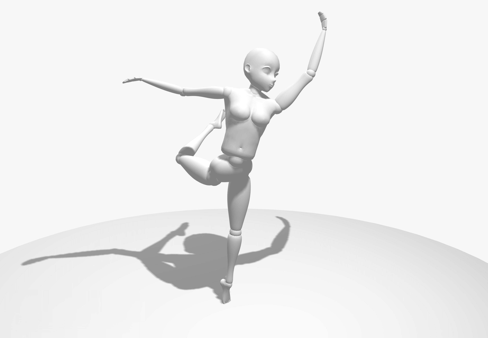
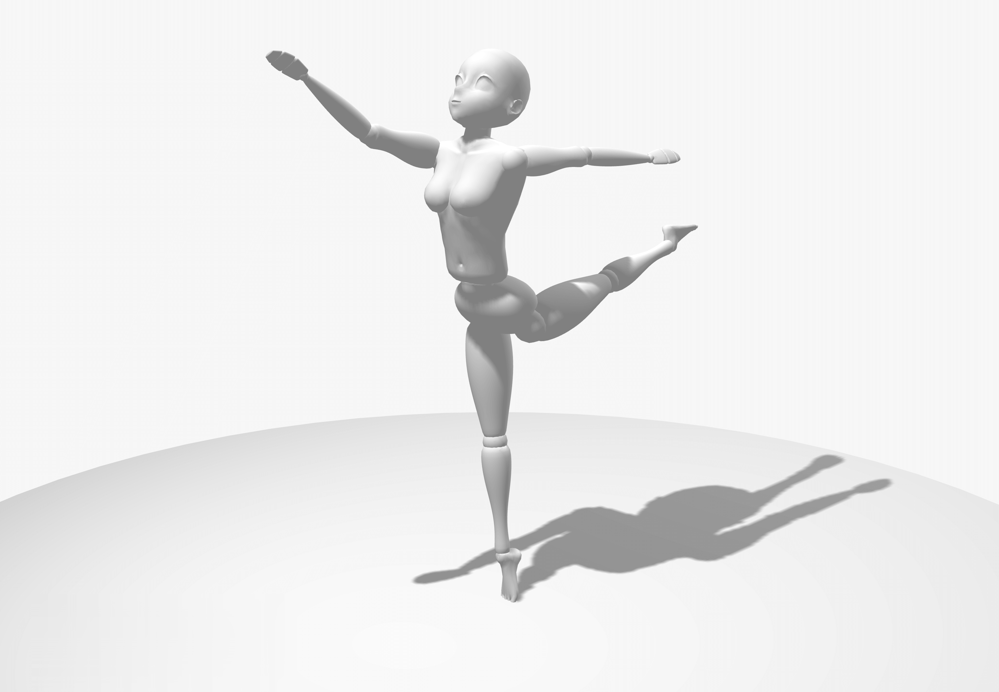
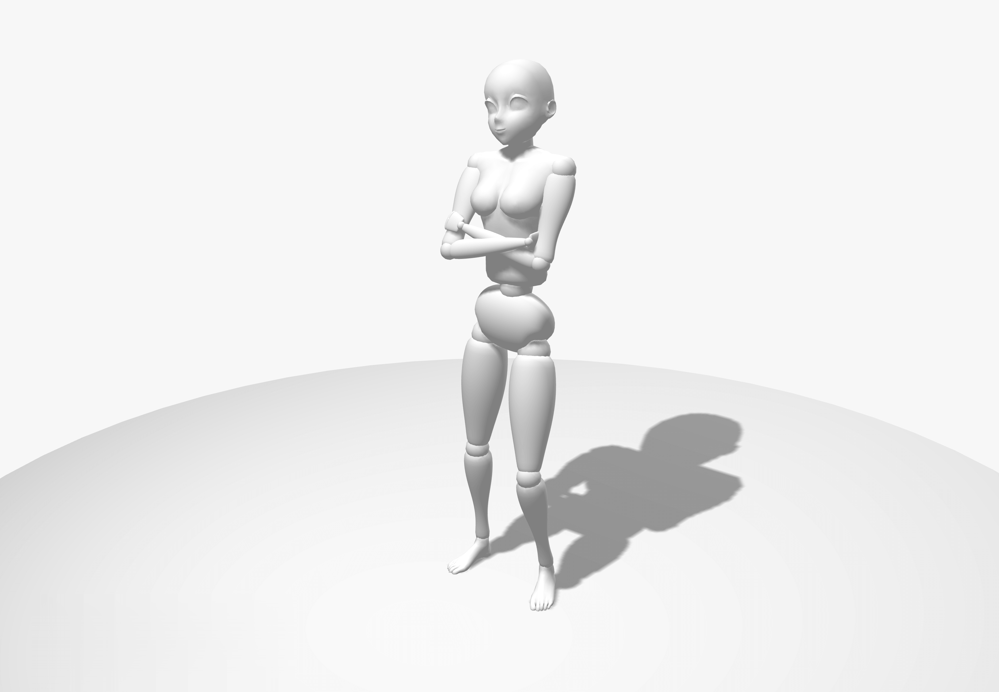
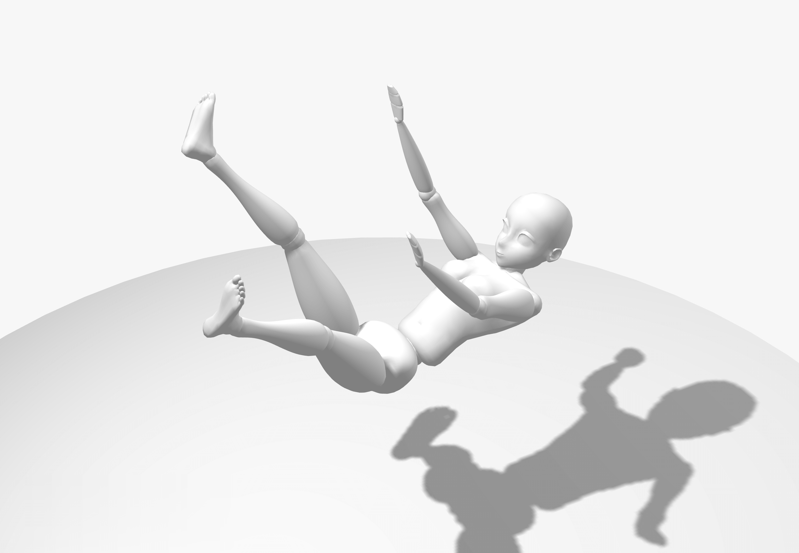
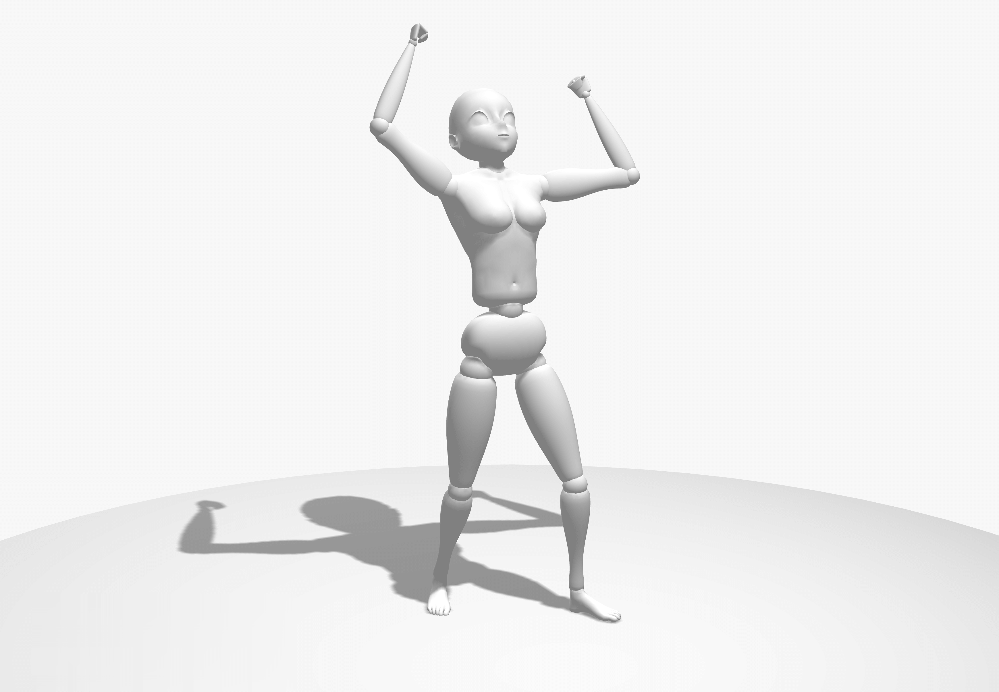
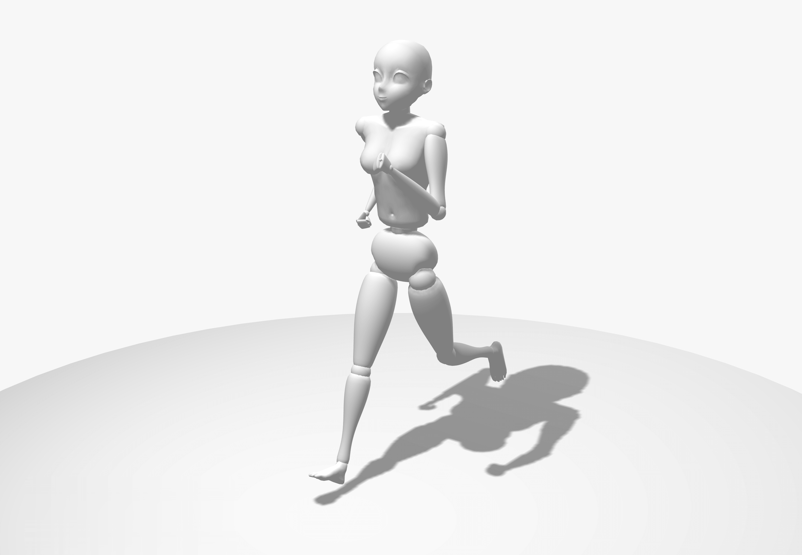
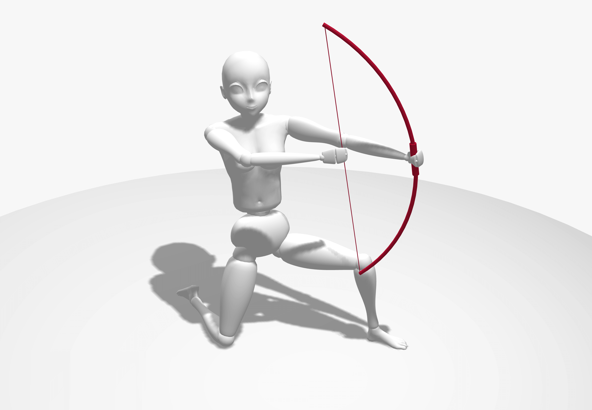
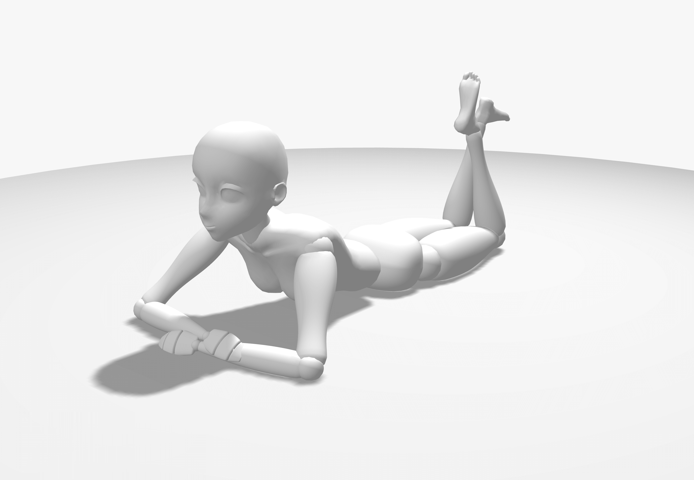

首页
姿势介绍
35个动漫姿势
芭蕾舞1

兴奋地在空中跳跃
芭蕾舞2

十字芭蕾
交叉双臂

望向远处
向后倒

兴奋

慢跑

跪地射箭

跪
双脚悬空趴着

躺在地板上
半空射箭
悲伤
擦地板
坐在地上
靠着椅背坐
盘腿而坐
双腿交叉
坐在椅子上
翘腿坐在椅子上
侧卧
趴着睡
蜷缩睡觉
蹲
叉腰站立
插口袋站着
惊讶
用剑阻挡
用剑斜击
用剑劈砍
用剑刺
用剑侧击
放松行走